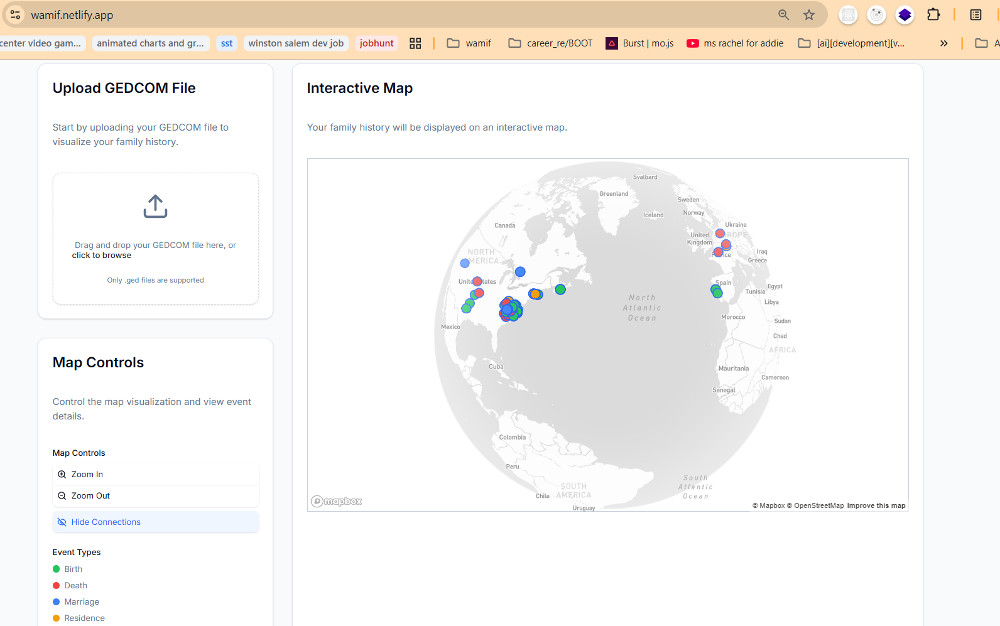
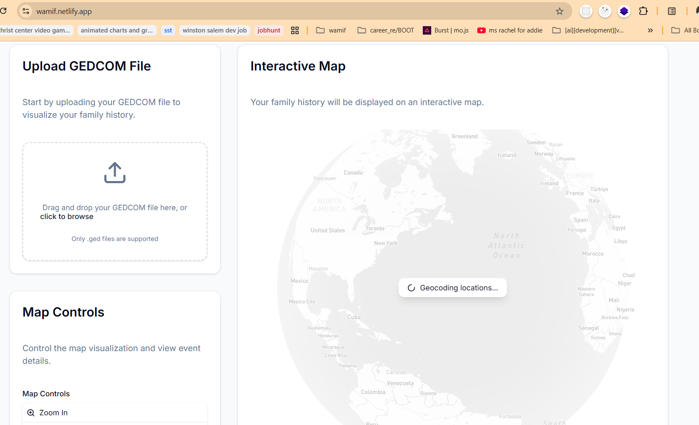
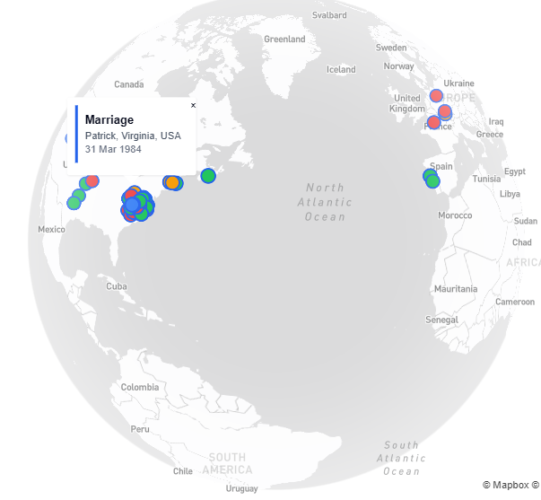
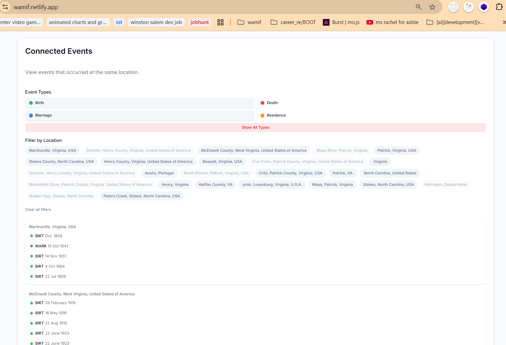

DATA MODEL
Keep relationships first-class
People and events are treated as connected data rather than flattened map pins, supporting views that group records by person, event type, and location.
Turning text-based family-history records into connected events that can be explored across geography and time.

GEDCOM files preserve people, relationships, dates, places, and life events, but the format is optimized for interchange—not for seeing a family story. Understanding movement requires joining references, resolving event types, and placing locations into a shared geographic context.
WAMIF explores a more useful interface: upload a GEDCOM file, extract its people and events, geocode recorded places, and make the resulting relationships explorable on a globe and through connected-event views.
The interface makes a sequence of transformations visible without pretending the source data is already map-ready.
Accept a user-selected .ged family-history file.
Turn GEDCOM records and references into people and event data.
Preserve graph-oriented relationships between people, events, and places.
Resolve recorded place names into coordinates with visible processing state.
Render typed events, details, filters, and connected locations with Mapbox.
People and events are treated as connected data rather than flattened map pins, supporting views that group records by person, event type, and location.
Geocoding is presented as a visible state. The interface does not make network-bound location resolution look instantaneous or broken.
Birth, death, marriage, and residence events use a consistent legend so dense geographic clusters remain interpretable.
These are working-product captures, not conceptual mockups.



The verified application supports GEDCOM upload and parsing, geocoding state, Mapbox event visualization, event types, and connected-event exploration. The public repository also exposes the React/Next.js implementation and parser-oriented tests.
This is presented as an exploratory product, not a claim of a production genealogy platform. A future product slice could add a single-person movement timeline, stronger error recovery, privacy guidance for uploaded family data, and a more cohesive component system—but those are intentionally not represented as shipped here.